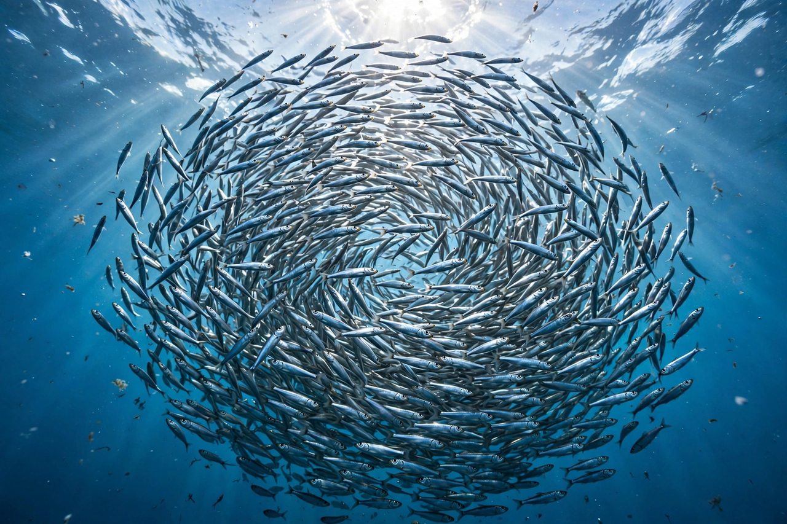

| Forage fish | |
 | |
| Examples | Anchovies, sardines, herring, menhaden, sprats, capelin, sand lance |
|---|---|
| Habitat | Pelagic zone, especially upwelling regions |
| Role | Primary link between plankton and higher predators in marine food webs |
Forage fish, also called prey fish or bait fish, are small pelagic fish that are preyed on by larger predators including bigger fish, seabirds, and marine mammals. Typical ocean forage fish are small, filter-feeding schooling species such as herring, anchovies, sardines, and menhaden, which feed on plankton and in turn convert that production into food for much of the ocean's higher wildlife.
Forage fish occupy the middle of marine food webs — sometimes called the "wasp waist" of the ecosystem, because a small number of forage species channel energy from plankton to a great diversity of predators. They form dense schools and bait balls that attract tuna, billfish, cod, salmon, seals, whales, gannets, and penguins. Their populations fluctuate dramatically with ocean conditions: the anchoveta fishery off Peru, the world's largest single-species fishery, rises and collapses with El Niño events, and sardine and anchovy stocks in systems such as the California and Humboldt currents have alternated in dominance over decades.
Forage fish account for roughly a third of the world's marine fish catch by volume. Much of the catch is not eaten directly but is reduced to fishmeal and fish oil for aquaculture and livestock feed, a use that has become controversial as demand for farmed salmon and other carnivorous fish has grown. Direct human consumption — sardines, anchovies, herring, and sprats, eaten fresh, canned, salted, or fermented — is promoted by conservationists as a more efficient use of the resource. Forage fish are also used as bait in tuna, crab, and lobster fisheries.
Fisheries scientists and conservation reports (notably the 2012 Lenfest Forage Fish Task Force report) have recommended precautionary management: because forage species are worth more in the water as food for valuable predators than their landed price suggests, the task force proposed cutting fishing rates substantially below conventional maximum-sustainable-yield levels in many cases and halting new fisheries on unmanaged forage species. Several jurisdictions have since adopted forage-fish protections, including U.S. West Coast rules safeguarding species such as saury, sand lance, and lanternfish from directed fishing.